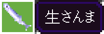
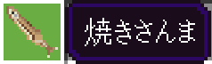
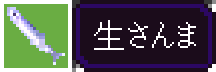
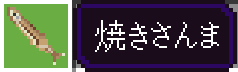

【食料アイテム】
はじめに
基本的な部分は▶ダミーアイテムのページでダミーアイテムが実装済みである事を前提に進めていきます。
ここでは
※「汎用ブロック」とは、上記ページの「コンポーネント定義」の項目でご紹介させて頂いた
ここでは
componentsブロックのJSONデータの内容を、「汎用ブロック」「アニメーション設定」「食料設定」の３つのパートに分けて食料アイテムの作り方をご紹介します。※「汎用ブロック」とは、上記ページの「コンポーネント定義」の項目でご紹介させて頂いた
componentsブロックの便宜上の呼称です。定義ファイルの内容
ここでは本環境で実装している以下のアイテム（さんま）用のJSONファイルを例に取り上げます。
釜戸などで焼いて食べる事を可能にするため「生さんま」と「焼きさんま」をセットで作成しています。
・生さんま（customize:sanma）

・焼きさんま（customize:cooked_sanma）

<ビヘイビアパック>/items/sanma.json（生さんま）
上記のコメントのように、大きく分けて「汎用ブロック」「アニメーション設定」「食料設定」の３つのパートに分けています。
「生さんま」「焼きさんま」それぞれの設定内容は以下でまとめて記載しています。
釜戸などで焼いて食べる事を可能にするため「生さんま」と「焼きさんま」をセットで作成しています。
・生さんま（customize:sanma）

・焼きさんま（customize:cooked_sanma）

<ビヘイビアパック>/items/sanma.json（生さんま）
{
"format_version": "1.20.50",
"minecraft:item": {
"description": {
"identifier": "customize:sanma",
"menu_category": {
"category": "none"
}
},
"components": {
// 汎用ブロック -----START
"minecraft:icon": {
"texture": "sanma"
},
"minecraft:display_name": {
"value": "item.customize:sanma.name"
},
"minecraft:can_destroy_in_creative": false,
"minecraft:hand_equipped": false,
"minecraft:glint": true,
// 汎用ブロック -----END
// アニメーション設定 -----START
"minecraft:use_animation": "drink",
"minecraft:use_modifiers": {
"use_duration": 1.6,
"movement_modifier": 0.35
},
// アニメーション設定 -----END
// 食料設定 -----START
"minecraft:food": {
"nutrition": 0
}
// 食料設定 -----END
}
}
}
<ビヘイビアパック>/items/cooked_sanma.json（焼きさんま）
{
"format_version": "1.20.50",
"minecraft:item": {
"description": {
"identifier": "customize:cooked_sanma",
"menu_category": {
"category": "equipment",
"group": "itemGroup.name.cookedFood"
}
},
"components": {
// 汎用ブロック -----START
"minecraft:icon": {
"texture": "cooked_sanma"
},
"minecraft:display_name": {
"value": "item.customize:cooked_sanma.name"
},
"minecraft:can_destroy_in_creative": false,
"minecraft:hand_equipped": false,
"minecraft:glint": false,
// 汎用ブロック -----END
// アニメーション設定 -----START
"minecraft:use_animation": "eat",
"minecraft:use_modifiers": {
"use_duration": 1.6,
"movement_modifier": 0.35
},
// アニメーション設定 -----END
// 食料設定 -----START
"minecraft:food": {
"nutrition": 5
}
// 食料設定 -----END
}
}
}
上記のコメントのように、大きく分けて「汎用ブロック」「アニメーション設定」「食料設定」の３つのパートに分けています。
「生さんま」「焼きさんま」それぞれの設定内容は以下でまとめて記載しています。
汎用ブロック
・minecraft:icon
テクスチャファイルの所在を表すキーを設定しています。- 生さんま
- "texture": "sanma"
- 焼きさんま
- "texture": "cooked_sanma"
・minecraft:display_name
以下の>> 多言語設定の項目で設定しているキーの名前を設定しています。この多言語設定で登録されているキーの値がアイテム名として表示されます。
- 生さんま
- "value": "item.customize:sanma.name"
- 焼きさんま
- "value": "item.customize:cooked_sanma.name"
・minecraft:can_destroy_in_creative
クリエイティブモード時にブロックを壊さないようにfalseを設定しています。・minecraft:hand_equipped
装備品ではないのでfalseを設定しています。・minecraft:glint
「生さんま」だけはショップで売却できる特殊なアイテムである事を表現するため、レンダリングがかかるようにtrueを設定しています。アニメーション設定
アニメーションの指定方法の詳細については▶アニメーションの種類ページをご覧ください。
「生さんま」「焼きさんま」共にバニラのリンゴの設定を流用しています。
・minecraft:use_animation
アニメーションの種類を指定します。- 生さんま
-
ショップでの売却アイテムのため、食片が飛び散るエフェクトが表示されない
drinkアニメーションで代用しています。 - 焼きさんま
-
食す事で満腹度が回復するので
eatアニメーションを設定しています。
・minecraft:use_modifiers
アイテムを使用するまでにかかる時間を指定します。「生さんま」「焼きさんま」共にバニラのリンゴの設定を流用しています。
食料設定
・minecraft:food
満腹度の回復量を指定します。- 生さんま
- ショップでの売却アイテムのためゼロを設定しています。
- 焼きさんま
- 食す事で満腹度が５ポイント回復するように設定しています。
多言語設定
カスタムエンティティの場合と同様に以下のファイルでアイテム名を定義しています。
<リソースパック>/texts/en_US.lang
<リソースパック>/texts/en_US.lang
item.customize:sanma.name=生さんま
item.customize:cooked_sanma.name=焼きさんま
おわりに
ここでご紹介させて頂いた「生さんま」は釣れるアイテムとして▶釣りアイテムのページでご紹介しています。
また▶ネットショップのページでご紹介させて頂いたショップで売却する事が可能です。
「生さんま」を焼いて「焼きさんま」を作る方法は炉のレシピアイテムとして▶レシピの作り方のページでご紹介しています。
また▶ネットショップのページでご紹介させて頂いたショップで売却する事が可能です。
「生さんま」を焼いて「焼きさんま」を作る方法は炉のレシピアイテムとして▶レシピの作り方のページでご紹介しています。